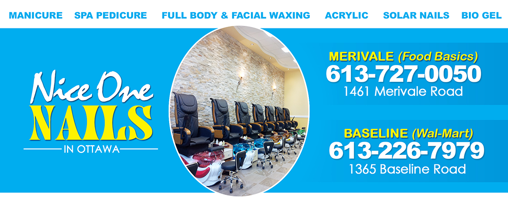
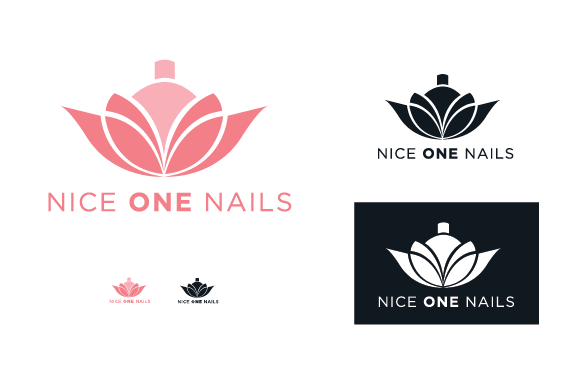
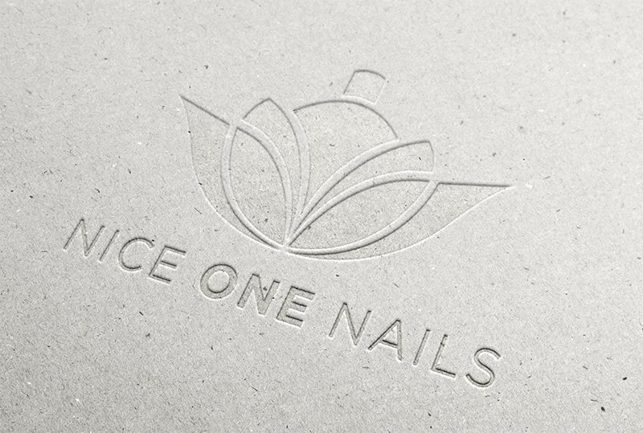
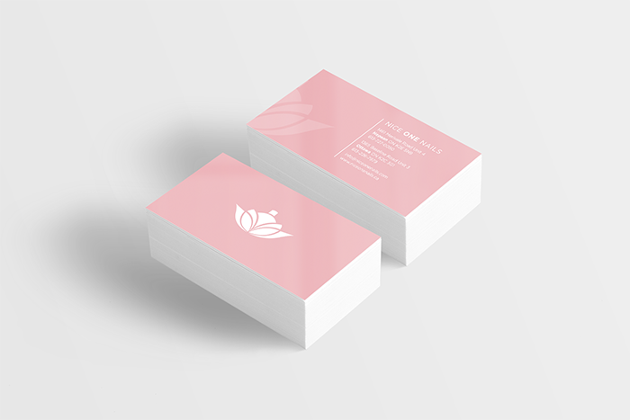

<!DOCTYPE html>
<html lang="en-ca">
<head>
  <meta charset="utf-8">
  <title>Nice One Nails</title>
  <meta property="og:title" name="viewport" content="Pamela Azzi's Graphic Design Website Portfolio. - Ottawa.">
  <link href="css/main.css" rel="stylesheet">
  <link href="css/modules.css" rel="stylesheet">
  <link href="css/grids.css" rel="stylesheet">
  <link href="css/typography.css" rel="stylesheet">
  <link href="https://fonts.googleapis.com/css?family=Montserrat" rel="stylesheet">
<link href="https://fonts.googleapis.com/css?family=Questrial" rel="stylesheet">
<link href="https://fonts.googleapis.com/css?family=Abhaya+Libre" rel="stylesheet">
</head>

<h2>NICE ONE NAILS</h2>
  <h3>RE-BRANDING</h3>

    <div class="body">

      <p class="paragraph">My personal perception right now of the company is mediocre. The Salon doesn’t have that attraction they need to lure in more clients. This is all being affected by the way they advertise and how their brand looks. The font and logo used has a very dated look and feel. The fonts don’t fit the target market and aren’t feminine enough. Of course, most of their clients are woman, so their branding strategy should look feminine. To fix this problem I chose to go with a soft feminine look to their logo.
      The new logo is a pink lotus flower with a nail polish bottle in the center. Considering that the staff at Nice One Nails is of Vietnamese origin, I chose to use their native flower, which is the lotus flower. This concept adds a touch of culture to their salon, which makes their company seem unique. The lotus flower also has a feminine feel, which matches the target market. The lotus flower also symbolizes ‘divine beauty’ according to the Vietnam culture. The symbolism reflects the work they do and gives the salon a feel that you will get beautiful nails. I added the nail polish bottle in the middle of the lotus flower because it looks like part of the flower, and the logo needed to look like a nail salon logo.
      I chose to use a soft pink colour for my logo because the nail salon mainly targets women, and the colour pink is a feminine colour. The lotus flower is also mainly pink. Pink nail polish is also such a popular colour and a classic choice for many females.
      For my choice of type, I chose to use an all-capital sans-serif font with two font weights; regular and bold. I chose to do so to create contrast in the company name. I chose to emphasize on the word “One” because this word represents uniqueness and exclusiveness. This reflects the type of work and design you will receive, because everyone is different and everyone has a specific vision of how they would like their nails to be.
      </p>

  <h2>BEFORE</h2>
  

  <h2>AFTER</h2>

    
    
    
    

    </div>
